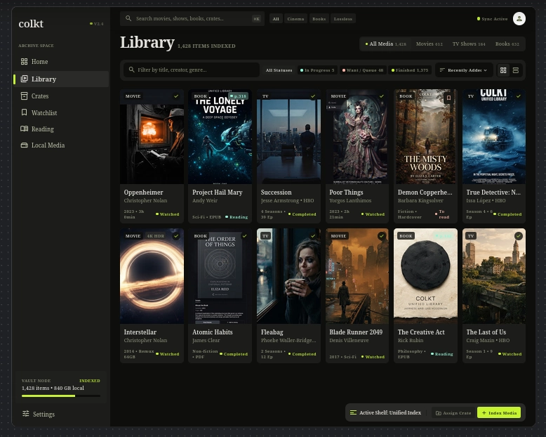
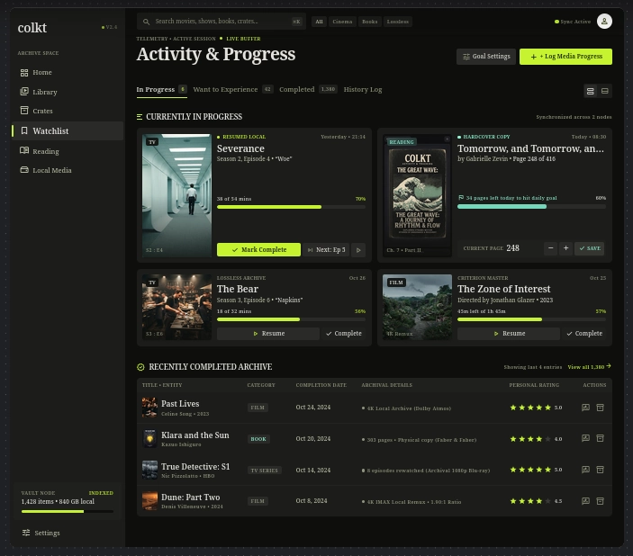
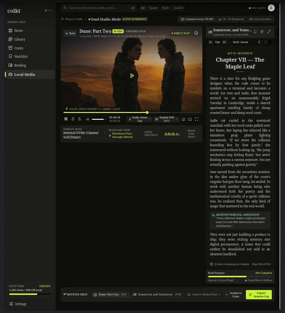

Your shelf, your way.
One shelf for everything you watch and read.
Colkt is a private personal media library for movies, TV shows and books. Collect what you love, organise it your way, keep track of your progress, and enjoy it, all in one place.
Join 1200+ media enthusiast waiting for early access. No spam, and you can unsubscribe whenever you like.

A home for the things you love.
Movies live in one app. Books in another. The shows you mean to watch are in a note on your phone, and the film a friend recommended is in your memory, for now.
Collect it.
Colkt brings it all together. Collect movies, TV shows and books, whether you have the files or simply want to remember them.
Organise it.
Organise your own collections them into crates, built your own way. A crate can be a genre, a mood, a series, a weekend plan or a reading list. You decide.
Track it.
Keep track of what you want to watch or read, what you've finished, and where you left off.
Enjoy it.
When it's time to settle in, you can watch or read your local media right inside Colkt.
Colkt doesn't provide movies, shows or books. It helps you look after your own.
Everything on your shelf, working together.
Here's what Colkt is being built to do.

1: One library for it all
Movies, shows and books. Finally together.
Stop switching between apps and lists to remember what you own, what you've seen and what you're reading. Colkt gives your media one shared home, so your whole collection is easy to find.

2: Crates
Organise it the way you think.
Group your media into crates that make sense to you: by genre, by mood, by who you're watching with, or by nothing anyone else would guess. Your collection, your logic.

3: Tracking
Remember where you left off.
Mark what you want to watch or read, what you're in the middle of and what you've finished. See your progress at a glance, and never wonder which episode or chapter was next.

4: Local media
Your files, tidied up.
Bring in the movies, shows and books stored on your device and give them a proper home. Keep them organised alongside everything else you collect, instead of lost in folders.

5: Watch and read inside Colkt
Press play. Turn the page.
Watch supported local movies and TV shows, and read supported local books, without leaving your library. Browsing, tracking and enjoying all happen in the same place.
Your library. Your rules.
A personal library should feel personal. Here's what we're building Colkt to stand for.
Private by design
Colkt is meant to be your own space, where you stay in control of your media library and your information.
Open source
Colkt is being built in the open. You can see how it works, follow its progress and help shape it.
Yours to enjoy
Colkt helps you organise and enjoy the media that's already yours. It doesn't supply movies, shows or books, and it isn't a streaming service.
Built in the open.
Colkt is a real project, and we'd like you to be able to watch it take shape. This is where you can follow along, see what's happening and tell us what you think.
Completed
Finished and ready. Completed work is listed here as it lands.
In progress
What we're building right now.
Planned
Next in line, with the details still taking shape.
Upcoming
Ideas on the horizon. Open to your feedback.
GitHub repository →
Browse the code and follow the work as it happens.
Licence →
Read the terms Colkt is shared under.
Releases →
Get the latest release when it's available.
Your shelf is ready when you are.
Join the waitlist and be among the first to try Colkt. Start gathering your favourites in one place that's yours.
We'll send one email when Colkt is ready to try, and the odd update before then. No spam, and you can unsubscribe at any time.